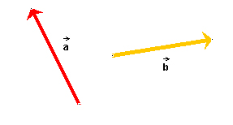
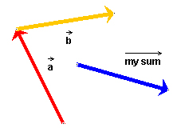
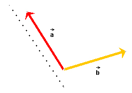
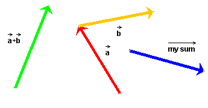

Instructions
This page is designed to get you started using the applet. The applet should be open. The step-by-step instructions on this page are to be done in the applet. You may need to toggle back and forth between instructions and applet if your screen space is limited.
 Constructing The Resultant (Sum)
Constructing The Resultant (Sum)
 (a) Tip-to-Tail
Method
(a) Tip-to-Tail
Method
 (b) Parallelogram
Method
(b) Parallelogram
Method
If the applet window is not empty, clear it by pressing Reset
 .
.
Draw two vectors in the applet window. To draw a vector, select
the Vector tool  ; then click in
the applet window and draw with the mouse. You can change the
vector by dragging either its tail or its tip. You can move the
vector without changing it by clicking it somewhere near its middle
and dragging it.
; then click in
the applet window and draw with the mouse. You can change the
vector by dragging either its tail or its tip. You can move the
vector without changing it by clicking it somewhere near its middle
and dragging it.
To draw a second vector, repeat the procedure, beginning with the selection of the Vector tool. The applet will not allow you to draw more than two vectors.
The applet will label the two vectors  and
and  .
.
Try to draw two vectors and arrange them like those on Figure 1 below.

Figure 1

(a) Tip-to-Tail Method. Arrange the two vectors so that
the tail-end of vector is aligned
with the tip of vector . Note that
the exact tail ends and tips of the vectors are marked by a tiny
black dot. To achieve an exact join, place the appropriate dots on
top of each other. To move a vector without changing it, drag it at
its middle.
When done, the vectors should be arranged as shown in Figure 2 below.

Figure 2
To draw the resultant, select the Draw-Your-Sum button  and draw the vector. It will be
drawn in blue and labeled "my sum" by the applet. The following
Figure 3 shows a vector that has been drawn this way, but it is not
the correct resultant. If you have drawn an incorrect resultant,
you can change and move the vector as described under Section 1
above.
and draw the vector. It will be
drawn in blue and labeled "my sum" by the applet. The following
Figure 3 shows a vector that has been drawn this way, but it is not
the correct resultant. If you have drawn an incorrect resultant,
you can change and move the vector as described under Section 1
above.

Figure 3
(b) Parallelogram Method. Here the two vectors have to be joined tail end to tail end, as in Figure 4 below. Again, observe how the dots marking the tail ends of the two vectors coincide in Figure 4.
To complete the parallelogram, auxiliary lines must be
drawn parallel to the given vectors. The applet lets you draw
dotted lines for this purpose. Select the Draw-a-Dotted-Line button
 and then draw a line. Figure
4 shows such a dotted line.
and then draw a line. Figure
4 shows such a dotted line.
To make a line exactly parallel to one of the vectors, you can change its orientation by dragging either end of the line. To move the line without changing its orientation, drag it at its middle.

Figure 4
Once you have constructed the parallelogram, draw
the resultant after selecting the Draw-Your-Sum button as described under "Tip-to-Tail
Method" above.
Once you have drawn your resultant, the Answer button  becomes active. When you press this
button, the applet will draw the correct resultant in green.
becomes active. When you press this
button, the applet will draw the correct resultant in green.
If you do this when the applet displays a configuration as in Figure 3, you should see something like what is shown in Figure 5 below.

Figure 5
You can drag your sum over to the correct sum, labeled + , or
the correct sum over to yours to compare the two vectors.